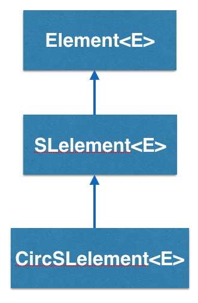

CircSLelement<E> implements a doubly linked list in BRIDGES and is inherited from SElement<E>

How does the CircSLelement<E> work?
CircSLelement<E> stands for Circular Singly Linked Element and is a type
of container that has one link, pointing to another SLelement<E>.
So an CircSLelement<E> "knows" who it is pointing at but it does not know
who is pointing at it(if any).

In the above example, CircSLelement1 points to CircSLelement2. Calling getNext()
on CircSLelement1 will return a link to CircSLelement2, and calling getNext() on
CircSLelement2 will return a link to SLelement3. CircSLelement3 points to CircSLelement1. Calling getNext() on CircSLelement3 will return a link to CircSLelement1.
Also notice that there is no getPrev(). CircSLelement2 has no idea what
element came before it. So, you CANNOT go backwards.
CircSLelement - An Example BRIDGES program
Bridges Visualization
- Once all your code is in order, run your file.
- Assuming all your code is correct and it compiles correctly, a link to the Bridges website will be generated on the console.
- Copy/paste this link into your favorite browser to view a visualization of the data structure you just created.
- It should look something like this:
Well done! You’ve just created your Bridges Circular Singly Linked List project!